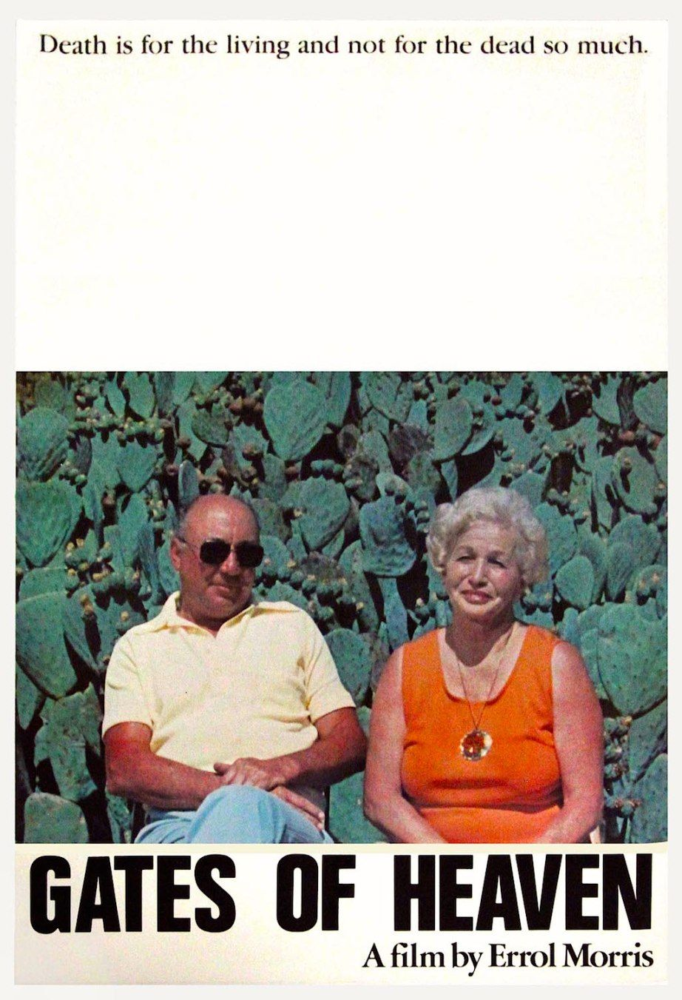

Errol Morris
1978
85 minutes
TITLE: Gates of Heaven TEXT PLACEHOLDER 107
This is an Errol Morris documentary about pet cemeteries. It is notorious for being the documentary that caused Werner Herzog to eat his shoe.
You avoided this documentary for a long time. Part of it is because of the superstitious horror of the topic. You did not want to think about pets dying. But now with all of your pets dead, you no longer have anything to fear. Freedom's just another word for nothing left to lose. The other reason is because you failed to have a proper appreciation of just how fucking funny this film is. You were ready to go into this film with a nerd hat and get ready for a deep dive where you get a Freakonomics crash course about the ins and outs and economics of the business of disposing of dead pets. You assumed this would be followed with the particulars of the case in question. At that point the scammy actions of those involved would be breathlessly reported as a sort of pathetic background for an increasingly lurid story of death and betrayal worthy of podcast treatment.
Instead, it's basically a real-life precursor to Best in Show. There's little drama and no stakes. Just a profile of the kinds of people who would be behind the scenes running a pet cemetery, occasionally bitching about the business and each other but mostly just hanging out being tacky and unusual.
The highlight of the film for you, of course, is the old woman they interview who lived across the street from one of the properties in question. She starts off the interview on-topic, describing some things relevant to the business and "story", but then she quickly veers off into an uninterrupted diatribe for several minutes about her ungrateful grandson who borrowed money from her and never paid it back. In his wisdom, Errol Morris just leaves the camera running and lets her keep rambling on and on until she's done, and it's a beautiful thing.
Time to choose something different: